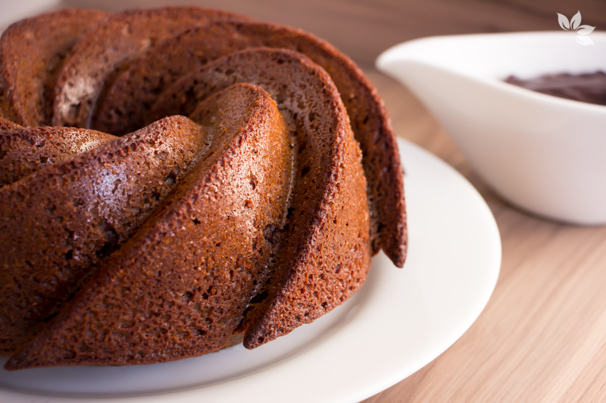

Arroz de Couve-flor

- Arroz
- Couve-flor
- Cebola média
- Azeite
Deixe a couve-flor picada.
Adicione os ingredientes e refogue bem. Adicione sal, tampe a panela e deixe cozinhar.
Bolo de Café
- Farinha de trigo
- Açúcar
- Café coado
- Chocolate em pó
- Ovos
Bata o açúcar, as gemas e o café. Adicione farinha e chocolate e mexa bem. Bata as claras e junte à mistura.
Coxinha de Brigadeiro
- Leite condensado
- Chocolate em pó
- Manteiga
- Morango
- Chocolate granulado
Junte o leite condensado, o chocolate em pó e a manteiga. Aqueça no fogo baixo. Envolva os morangos e passe no granulado.